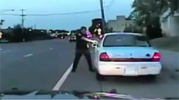
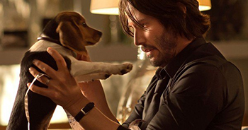
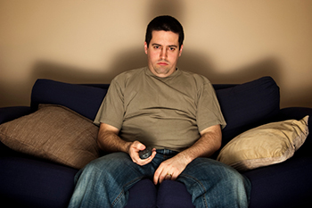

Articulo original (En Inglés): Jason Pargin, 11 Septiembre 2017 cracked.com
Traducción y redacción al Español: Jonatan Ardón
Quisiera que añadieran esta frase al himno nacional:
Odiar algo malo no te hace bueno.
Que lo pongan en lugar del coro o algo así. Es importante. Es una de esas cosas que todo el mundo sabe, hasta que conviene no saberlo. Demonios, odiar a la gente mala ni siquiera te acerca necesariamente a ser una mejor persona. El Ku Klux Klan odia al ISIS, pero no lo consideramos un punto a su favor. Sin embargo, estoy bastante seguro de que la mayor parte de lo que consideramos bueno en esta cultura es simplemente despreciar las cosas que la gente considera malas.
¿Qué tiene esto que ver con los tiroteos policiales, los nazis, la inmigración y la mayoría de los titulares que verás este año? ¿Y cómo se relaciona con la mejor franquicia de acción de Keanu Reeves? Bueno, todo se reduce a cómo...
6 | Odiamos darle una segunda oportunidad a la gente
Este tema ya tendrá cinco escándalos a sus espaldas cuando se publique este artículo, pero mientras lo escribo, la administración Trump acaba de poner fin a un programa gubernamental para niños cuyos padres entraron ilegalmente en Estados Unidos. Básicamente, el "DACA" permitía a estos jóvenes conseguir trabajo, pagar impuestos, ir a la escuela y obtener permisos de conducir a pesar de no ser ciudadanos. Poner fin al programa significa destruir las vidas de unas 800,000 personas por un delito que cometieron sus padres. Como dijo un congresista republicano, la "justicia" significa que estas personas merecen "vivir en las sombras". Después de todo, dijo, entraron al país ilegalmente. Ni siquiera años de vida productiva y respetuosa con la ley los absuelve de ese pecado original.
Los expertos lo llaman "moralidad John Wick" (o al menos deberían hacerlo), en referencia a la serie de películas en la que los mafiosos rusos matan al perro de Keanu Reeves y él, en respuesta, les dispara a 738 de ellos en la cabeza. Nadie pensaría que una persona real considera que ese es un código moral razonable por el que regir su vida, hasta que se leen los comentarios debajo de cualquier publicación sobre un policia matando a un civil...

YouTube
... o ver secciones enteras de comentarios llenas de gente apoyando a un tipo que mató a tiros a un ladrón de coches. La lógica casi tiene sentido si entrecierras los ojos: si la víctima no se hubiera resistido (o movido repentinamente las manos, o fumado marihuana, o no hubiera hecho señales, o cruzado ilegalmente la frontera), seguiría viva, por lo que no tiene a nadie a quien culpar más que a sí misma.
La frase "no hay nadie a quien culpar" es clave. Implica que, una vez que alguien rompe una regla, puedes hacerle lo que quieras y no se te puede culpar. Presta atención y oirás a alguien usar este razonamiento una vez al día, aunque sea por una tontería. ¿Conoces a algún pobre bastardo en tu círculo social al que le hayan puesto un apodo degradante por algo que hizo cuando tenía 13 años? Si quieres un ejemplo famoso, solo piensa en Angela Aguilar y que a pesar de su talento (puede que no sea la mejor cantante, pero canta bonito) la gente aun la critica por haberse casado con Nodal y cualquier maldad, maltrato, agresión esta justificada porque ella hizo algo malo y todo lo malo que le pase "está bien". Es más, te apuesto a que si alguien llegara a hacerle daño físicamente muchos dirán que se lo merece y se sentira justificado solo porque cometió un error y la gente odia perdonar.
YouTube
Necesitamos tan solo un pecado mortal que nos permita revocar el estatus de una persona como ser humano digno de dignidad, respeto, empatía o cualquier otra cosa. Es el proverbial perro de John Wick, la carta moral ganadora. No se nos puede acusar de prejuicios o mezquindad mientras tengamos un cadáver sangriento del perrito de John Wick con el que nos podamos defender en respuesta a las críticas.
¿Cómo se aplica esto a ti, una buena persona que lucha por una buena causa? Ahora voy a eso.
5 | Usamos la "justicia" como excusa para todo tipo de atrocidades.
"Un momento", dice el hipotético lector escéptico que me ha seguido de artículo en artículo durante los últimos diez años, "¿estás utilizando a los partidarios de la inmigración y los tiroteos policiales como ejemplo de esta cosa en acción? Eso es solo el resultado del racismo, amigo".
No creo que eso sea del todo cierto. Creo que la razón por la que tantos racistas podrían pasar una prueba de polígrafo con la pregunta "¿Eres racista?" es que no piensan que las minorías sean inhumanas por su color, sino por su supuesta criminalidad. El agente que disparó a Philando Castile mientras estaba sentado en un coche con su novia y su hija de cuatro años dijo que le pareció oler marihuana. En su mente, este único indicio de un delito menor justificaba absolutamente cualquier respuesta.
St. Anthony Police Department
Ahora bien, creo que nadie se ha puesto a pensar que la situación hubiera sido distinta si el conductor hubiera sido un drogadicto blanco. Los prejuicios casi siempre se esconden detrás de un supuesto celo por la justicia. Las turbas de odio de Internet nunca inundan el buzón de correo de una mujer con amenazas de muerte sin un perrito de John Wick que lo justifique, y cuando no existe un delito, lo extrapolamos. "¡Por supuesto que pensé que mi familia estaba en peligro mortal cuando ese mexicano se acercó al coche! Al fin y al cabo, si un tipo cruza la frontera ilegalmente, violará a una mujer. ¡Ya ha demostrado que no le importa la ley!".
Por supuesto, se trata de una doble moral totalmente descabellada: Pensamos que nuestros propios errores son casos aislados y no deberían afectar en modo alguno la opinión general que los demás tienen de nosotros (¡Que haya mentido una vez no me convierte en un mentiroso!). Sin embargo, es tan seductor que prácticamente todos los imbéciles odiosos que has conocido en tu vida han construido su repugnante y pesadillesca personalidad sobre esta misma base. Todos ellos piensan que su crueldad diaria es una respuesta a alguna provocación extrema.
pompi/Pixabay
Pero este artículo no solo trata de despreciar a esas personas con doble moral; prácticamente todos los que leen esto ya las consideran monstruos. Mi punto es que ninguno de ellos nació siendo un monstruo, por lo que deberíamos tener la misma conversación que se tiene en el segundo acto de todas las películas de zombis. "¿Cómo los detenemos y, lo que es más importante, cómo evitamos que nos conviertan?". Si la crueldad se disfraza de justicia, entonces cualquiera que crea en la justicia está en peligro. De hecho, cuanto más creas en la justicia, más peligro corres.
Una vez, cuando era un niño inocente y con buenas intenciones , le pregunté a mi maestro de escuela dominical cómo era posible que Dios enviara a las personas al infierno por toda la eternidad por infracciones bastante menores, mientras que si un gobernante terrenal castigaba a los infractores con torturas indefinidas, se le consideraría un déspota cruel. La respuesta me pareció lógica en ese momento, y fue la siguiente:
Debido a que Dios es infinitamente justo, siente un odio infinito por la injusticia. Su propia pureza es lo que hace imposible cualquier tolerancia hacia la impureza.
Por lo tanto, nuestra actitud blanda hacia los infractores de la ley (insistiendo en reformas y el trato humano) es en realidad evidencia de nuestra corrupción. Si fuéramos más justos, seríamos más crueles con los injustos. Por lo tanto, esa crueldad no solo está justificada, sino que, de hecho, es un barómetro clave de nuestra propia bondad. La mezquindad hacia los ateos y los homosexuales es exactamente lo que Dios quiere. Si estás leyendo esto y estás seguro de que este tipo de pensamiento medieval solo se aplica a los cristianos... bueno, sigue leyendo.
4 | Comenzamos a odiar a la gente por todas las razones equivocadas
Los detractores de cualquier mujer política, experta o activista no pueden resistirse a señalar lo fea o gorda que es (si es guapa, entonces el insulto es que es una mujerzuela o que solo ha conseguido su puesto gracias a su apariencia o que se acostó con alguien). Los racistas empezarán con las altas tasas de criminalidad y desempleo, pero rápidamente pasarán a decir que la música rap es un asco, que las mujeres de los guetos visten ropa de mal gusto y que los negros no saben hablar inglés correctamente. No importa que sea imposible justificar la música, la moda y el dialecto como ejemplos de fracaso moral. Por alguna razón, no basta con que sus enemigos simplemente estén equivocados, sino que tienen que ser repugnantes a nivel visceral.
siseeit/iStock
Es una locura cómo actúan esos racistas, ¿no? Esos paletos sucios, desdentados y endogámicos. Son casi tan malos como los gamers u otakus. Ya sabes, esos gordos vírgenes con barba que viven en el sótano de sus mamás. Probablemente todos votaron por Trump, ese tipo con el pelo raro y asqueroso, el bronceado falso y las manos pequeñas. Asqueroso, ¿verdad?
"¡Bueno, pero eso es diferente! ¡En esos casos, los objetivos se lo merecen!". Ah, ya entiendo. Se siente muy bien molestar a nuestros enemigos en sus puntos débiles. Sabemos que Trump se siente inseguro por su cabello, que Chris Christie probablemente sea sensible por ser gordo, que los marginados sociales se avergüenzan tanto de su virginidad que algunos prefieren pegarse un tiro antes que vivir con ella. Entonces, ¿por qué no usar esas armas? Al fin y al cabo, esto es una guerra total: todo lo relacionado con el enemigo es válido. Y recuerda, cuanto más crueles seamos con los malos, mejores personas seremos. Lo dijo el mismísimo Dios.
Pero, ¿qué pasa con todas esas buenas personas que tienen un peinado raro, esos chicos inseguros que tratan tímidamente de ocultar sus calvas? ¿O tus aliados que son poco atractivos, nerviosos y fracasan en el sexo? ¿Cómo se supone que no van a interpretar el mensaje de que la apariencia personal es tan importante como sus decisiones morales y que el fracaso sexual es algo de lo que hay que avergonzarse profundamente? ¿Que no importa si eres una buena persona si además tienes un aspecto descuidado y pocas habilidades sociales?
Diablos, mira lo que ha pasado. No solo hemos justificado la crueldad hacia nuestros enemigos basándonos en sus pecados pasados, sino que también hemos justificado la crueldad hacia personas que no tienen nada que ver. Simplemente lanzamos daños colaterales como las balas perdidas de John Wick, acribillando a turistas que pasan por allí con armas de fuego hasta que toda la ciudad queda paralizada por el pánico. Desde luego, no nos paramos a preguntarnos si el perro habría querido esto.
Summit Entertainment
3 | Terminamos radicalizándonos
Un tipo de mensaje de odio que he recibido a lo largo de los años dice algo así como: "He sido un lector diario desde 2010 y pensaba que ustedes eran personas buenas, pero después de ver bien, ¡me doy cuenta de lo equivocado que estaba! Adiós para siempre". Piénsalo por un momento. Afirman haber leído y disfrutado literalmente miles de artículos y vídeos antes de encontrar una sola idea ofensiva, momento en el que declararon que todo era un fracaso. Es muy extraño.
dcdp/iStock
Bueno, suena extraño y ciertas actitudes parecen raras, hasta que consideras la burbuja en particular en la que pasan la mayoria de su tiempo. Nunca he estado en un grupo activista que con el paso del tiempo no se convierta en un lugar donde cada vez se juzgan cosas cada vez más pequeñas e insignificantes. Me crié en una iglesia donde todos buscaban cosas cada vez más intrascendentes para juzgarse unos a otros. Las películas para adultos estaban prohibidas, por supuesto, pero ¿qué programas de televisión en horario estelar eran permisibles? ¿Alguno? Por supuesto, la música rock era del diablo, pero ¿y el country? ¿No son esas canciones sobre la fe, en cierto modo?
La evolución natural tiende hacia criterios cada vez más estrictos sobre qué comportamientos provocan el rechazo del grupo. El resultado final es que la causa central, el perrito de John Wick del grupo, puede ser tan pura como la nieve recién caída, y sin embargo el tono se volverá cada vez más tóxico con el tiempo, y los miembros serán cada vez menos caritativos entre sí. Aquí, por ejemplo, está cómo se ve mi línea de tiempo de Twitter:
"Los nazis son malos y hay que oponerse a ellos".
¡De acuerdo!
"También hay que oponerse a quienes apoyan o defienden a
los nazis".
¡Tiene sentido!
"La violencia ilegal es perfectamente aceptable cuando
se trata de oponerse a los nazis y a quienes los
apoyan".
Espera, no estoy seguro de estar de acuerdo con eso...
"Cualquiera que se oponga al uso de la violencia ilegal
contra los nazis también es un facilitador de los
nazis".
¿Qué? ¡No! ¡Yo soy uno de los buenos!
"Además, si lo piensas bien, todas las instituciones
estadounidenses y el propio capitalismo contribuyen a
apoyar la supremacía blanca, por lo que todos son
facilitadores de los nazis y merecen una represalia
violenta".
Oye, creo que acabas de declarar la guerra a
literalmente todos los que no están ahora mismo en la
sala contigo.
Se oye a los expertos hablar de cómo los extremistas se "radicalizan", de cómo un hombre pasó de ser un inspector de alimentos amable en San Bernardino a convertirse en un terrorista suicida en el transcurso de un año más o menos. Pero en realidad no es ningún misterio, y todos formamos versiones menos asesinas de esto. Todo lo que se necesita es un círculo social cerrado de personas con ideas afines en el que se considere inaceptable estar en desacuerdo con el grupo, y luego dedicar ese grupo a odiar algo. Ni siquiera importa si eso realmente merece ser odiado, sigue siendo tóxico. De hecho, funciona mejor si lo es. "¡Cómo puedes criticar cualquier defecto en el comportamiento de nuestro grupo cuando el otro bando son nazis! ¡Eso es literalmente decir que ambos bandos son iguales! ¡La mera existencia del mal puro en el otro bando significa matemáticamente que nuestro bando es el bien puro!".
En ese momento, no es posible ninguna crítica y no hay nada que modere la ira. La retórica se intensifica cada vez más, ya que cada miembro intenta superar al otro (para demostrar su propia rectitud demostrando que es el que más odia al objetivo), y no hay ningún método para frenarla. Las voces moderadas ajenas al grupo quedan completamente excluidas, y cualquiera de dentro que adopte un tono moderado puede ser acallado con acusaciones de ser un simpatizante del enemigo. Pronto, todo, desde insultos objetivamente grotescos hasta elaboradas fantasías de tortura, se lanza sin pensarlo dos veces.
2 | ...Hasta que alcanzas el punto de no retorno
En algún momento, se te sugerirá una acción que normalmente considerarías inmoral. No tiene por qué implicar turbas armadas o fabricar bombas. Dependiendo del momento, el lugar y la causa, podría ser algo tan insignificante como aceptar difundir una mentira. ("¡O sea, aunque no lo hayan hecho realmente, probablemente hayan hecho algo igual de malo! ¡No es que ellos nunca mientan sobre nosotros!"). O tal vez alguien sugiera averiguar la dirección de un miembro de la oposición, quizá descubrir dónde trabaja, para demostrarle lo serios que somos.
En todos los casos, algunos miembros estarán nerviosos. Este tipo de cosas pueden tener consecuencias, ¿verdad? Pero, ¿arriesgarán su estatus en el grupo al oponerse? ¿Se cuestionará su compromiso con la causa?
airdone/iStock
Es justo aquí donde te das cuenta de que la causa nunca fue lo importante. Lo importante era el grupo: tener a un grupo de personas con ideas afines que lucharan a tu lado. Al fin y al cabo, ¿se trataba realmente del perro o de lo que el perro simbolizaba? Quizás no te sacrificarías por la causa, siempre puedes conseguir otro perro, pero ¿te sacrificarías por tus amigos, esas personas que sabes que harían lo mismo por ti? ¡Por supuesto!
Y ahora, sin darte cuenta, tienes la respuesta a la pregunta que te has estado haciendo toda tu vida: "¿Cómo pueden las personas malvadas vivir consigo mismas? ¿Cómo pueden Hitler, Osama bin Laden o Charles Manson mirarse al espejo cada día?". Aquí tienes la respuesta. Así es como lo hacen. Dentro de cada persona verdaderamente destructiva se encuentra el perrito de John Wick, el cachorro roto y sangrante que los impulsa sin sentido hacia adelante, y fuera de ellos hay un grupo de personas que refuerzan su ira hasta que la ira es todo lo que son.
Es una realidad de la naturaleza humana que vivir únicamente en oposición a algo, en lugar de por algo, te vacía por dentro. Para ser un ser humano completo, tienes que dedicar tu vida a construir algo bueno. Es fácil encontrarse a uno mismo restando tiempo y energía a los amigos, la familia, la carrera profesional y los pasatiempos, porque, maldita sea, uno de esos imbéciles del otro bando ha dicho algo indignante y tengo que responder, porque esto es una guerra y es lo único que importa.
1 | Y todo el tiempo te dirás a ti mismo que era la única manera.
Alrededor del 70 % de los lectores nunca llegan al final de un artículo en Internet, por lo que será interesante ver cuántos refutan esto con un "¡Genial, otro artículo que dice que Antifa y los nazis son lo mismo! Como si uno de ellos NO ESTUVIERA EXIGIENDO ACTIVAMENTE EL GENOCIDIO". Es la misma evasiva mental que he estado señalando: mientras la otra parte sea peor, no puedes criticarme. Pero yo, personalmente, te digo, como ser humano individual, que debes hacerte una pregunta crucial: ¿estás en esto por la causa o por la lucha? Hay una forma fácil de saberlo: ¿te involucras en las partes aburridas?
Toda la agenda de Donald Trump podría quedar anulada dentro de poco más de un año con un nuevo Congreso, pero estadísticamente la gran mayoría de gente no votará (y yo diría que la gran mayoría de los que acuden a las manifestaciones antinazis tampoco votará). Golpear a los nazis con palos es divertido. Votar en las elecciones intermedias no lo es. Solo una cosa da lugar a un cambio real. Demonios, en las elecciones de 2016, que supuestamente determinaron el futuro de la humanidad, el "no voto" ganó en 44 de los 50 estados. ¿Por qué algunos de ustedes están dispuestos a ponerse en peligro físico en una protesta, pero no soportan el tedio del cambio político en el mundo real? En el fondo, saben la respuesta.
"¡Pero votar no cambia nada!" Vale, el resultado de una sola elección al Senado ha impedido que se derogara Obamacare. Veinte millones de personas tendrán seguro médico el año que viene porque un pequeño grupo de votantes, el suficiente como para llenar un estadio, acudió a las urnas en lugar de quedarse en casa. ¿Crees que Hillary estaría hablando de derogar el DACA? "¡A veces la violencia es la única solución!" ¿Lo dices basándote en pruebas o porque quieres que sea cierto? Por cada movimiento nacionalista/autoritario que fue rechazado por la guerra, literalmente miles murieron en silencio por perder las elecciones o simplemente por no conseguir el apoyo popular. ¿Cuántas elecciones ha ganado David Duke? Maldita sea, estás jugando su juego. No dejes que los demonios te arrastren al infierno.
Porque Dios te ayude si un día descubres que tu enemigo finalmente ha sido derrotado o, peor aún, que tus tácticas solo lo han fortalecido (¿una turba armada del otro lado perjudicaría o favorecería el reclutamiento para el tuyo?). Te quedas con una personalidad construida enteramente sobre la lucha en una guerra equivocada, serías como una botella de veneno que no mató a las cucarachas y que ahora solo acumula polvo en el cobertizo, ese odio ya no sirve para nada, pero sigues cargando con él. En ese momento, ¿renunciarás a la ira y reconstruirás tu personalidad en torno al amor por algo? ¿O simplemente volverás ese odio contra ti mismo? Quiero que al menos lo pienses. Te dejo un video de una foca.
TikTok - Make your day. (n.d.). https://vm.tiktok.com/ZMAo8jy2D/